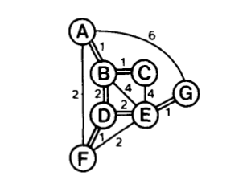
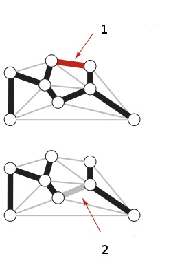

Minimum Kapsamlı Ağaç (Minimum Spanning Tree -MST-)
MST algoritması kenar ağırlıklarına (weights) sahip olan bir çizit (graph) yapısı içinde minimal ve kapsayan ağacı (MST) bulan algoritmaya verilen isimdir. Mesela alttaki çizit içinde

MST öyle bir bağlantı yapısıdır ki baştan sona, herhangi bir noktadan (node) bir diğerine geçiş yapılabilsin, ve bu tüm yolların toplamı en minimal olsun. Dikkat, herhangi bir noktadan diğerine giden yol en az olsun demiyoruz, bu durumda problem en kısa yol (shortest path) problemi olurdu, ki bu problemi Dinamik Programlama yazısında gördük. Burada göreceğimiz kapsayan ağacın toplamının minimal olmasıdır.
Kapsayan ağaç (spanning tree) kavramını tanımlamak gerekirse, bir çizitin kapsayan ağacı orijinal çizitin tüm noktalarına sahip olmalıdır, ağaç içinde hiçbir döngü (cycle) olmamalıdır. Döngü derken bir noktadan diğerine atlaya atlaya giderken bizi dönüp tekrar aynı yere getirebilecek türden "kapalı devre" tür bir döngüden bahsediyoruz - bu mümkün olmamalıdır. Ayrıca çizit bağlantılı olmalıdır, yani bir kısmı diğer kısmından kopuk bir çizit üzerinde MST bulunamaz.
Minimum kapsayıcı ağaç ise bu tür pek çok alternatif ağaçların içinde en az ağırlıklı olanıdır. Not, bir çizitin MST çözümü özgün (unique) olmayabilir, aynı ağırlıkta birden fazla değişik ağaç mümkündür. Mesela üstteki çizit için mümkün MST'ler altta görülüyor,

Kontrol edilebilir, üstteki her ağacın kenar toplamı 8'dır. Bu ağaçların her biri bir MST olarak kabul edilebilir.
Uygulama bağlamında MST bulma algoritmasının ne kadar kullanışlı olacağı görülüyor herhalde; mesela elektrik hatları, telefon iletişim hatları tasarlarken MST kullanılabilir, toplam bağlantısı en az olan bir ağ yapısı her iki durumda da kullanışlı olur. Biyolojik, kimyasal ağların analizinde bile MST kullanılmaktadır.
Ağaçların Özellikleri (Properties of Trees)
Başlamadan önce bir ağacı ağaç yapan iki önemli özelliği belirtelim
1) Tanım itibariyle ağaç olan bir şeye, arasında bağlantı olmayan iki noktayı birleştiren bir kenar koyarsak bu ağaçta bir döngü yaratmış oluruz.
2) Elde olan bir ağacın herhangi bir kenarını çıkartırsak bu ağacı "kopartmış" oluruz, birbiriyle bağlantısız iki alt-ağaç ortaya çıkar.

Resimde her iki durumu görüyoruz. Bu iki özellik çok önemli, çünkü onları MST'lerin çok temel özelliklerini ispatlamak için kullanacağız. Ondan önce bazı tanımlar,
Tanım
Kesik (cut): Bir çizit üzerindeki yapılan kesik, o çiziti birbiriyle alakasız, bağlantısız iki parçaya / kümeye böler. Not: Bir kesik birden fazla kenarın üzerinden geçebilir / kapsayabilir, çünkü bir çiziti tamamen ikiye ayırmaktan bahsediyoruz. Bir ağaçtan bahsediyor olsaydık, yukarıda belirttiğimiz gibi, tek bir kenarı kesmek yeterli olurdu.
Birleştiren kenar (crossing edge): birbirinden bağlantısız iki kümedeki herhangi bir noktayı diğer kümedeki herhangi bir diğer noktayla birleştiren bir kenardır.
Önerme (Proposition)
Herhangi bir çiziti alalım, ve bu çizitteki bir kesik içindeki (yani kopardığı tüm kenarlar) içindeki minimum birleştiren kenara bakalım. Bu kenar o çizitin MST'sinde kesinlikle olmalıdır.
İspat
Bu ispat tersini yanlışlama (proof by contradiction) yöntemini kullanacak. Diyelim ki bir kesik var, ve o kesikteki $e$ minimum birleştiren kenar. Bu çizitin MST'si $T$ olsun. Şimdi $e$'nin $T$'nin içinde olmadığı durumu düşünelim (yani önermenin dediğinin tersi), ve diyelim ki şimdi $e$'yi alıp $T$'ye ekliyoruz. Yeni bir çizit ortaya çıkardı, fakat daha önce dediğimiz gibi, $T$'ye bir kenar eklemek ona aynı zamanda bir döngü eklemek demektir, ki bu döngünün içinde en az bir diğer kenar $f$ olacaktır (çünkü $e$ MST'de olmadığına göre orada başka bir şey var), ki bu $f$, $e$'den büyüktür. Fakat o zaman $f$'yi kesip onun yerine daha az ağırlıkta olan $e$'yi ekleyince MST'yi, hem de daha az ağırlıkla elde etmiş olmaz mıydık? Evet. Demek ki $e$'nin MST içinde olmaması imkansızdır çünkü MST tanım itibariyle en minimal ağırlığa sahip olmalıdır.
Alttaki resimde gri ve beyaz ile gösterilen ayrı kümelerdeki noktaları bir kesik ile ayrılmışlar ve bu kümelerin arasındaki birleştiren kenarlar kırmızı ile gösteriliyor. Burada $e$ ile gösterilen kenar MST içinde olmalıdır.
Üstteki kavramlar Kruskal'ın MST bulan algoritmasının temelini oluşturmaktadır (bu algoritmaya kısaca Kruskal diyeceğiz). Kruskal (ilk başta) birbirinden bağımsız ağaçları yavaş yavaş yaratır, onları büyütür. Aynı anda sürekli o ağaçları minimal bir kenar ile birleştirip onları daha büyük bir ağaç yapma fırsatına bakar.
Ufak ufak ağaçlar üstteki durumda gri ve beyaz noktaları kapsayan ağaçlar gibi görülebilir, bunlar çizitin farklı bölgelerinde ayrı ayrı büyürler. Eğer bu ayrı ayrı bölgelerde, onlara ait MST'ler oluşturabilmişsek, Onları minimal şekilde birleştirmek (üstte $e$ ile) bize daha büyük bir MST sağlar.
Kruskal kenarları teker teker işler, önce onları ağırlıklarına göre sıralar, ve en küçük kenarları önce alır. Bu yüzden ağaçları bağlanayan "birleştiren kenarın" minimal kalması, ve önce alınması da sağlanır.
Birleşim-Buluş (Union-Find)
Kruskal'ın kodlama bağlamında önemli bir püf noktası, sırayla bakılan bir kenarın mevcut alt-ağaçlardan birine eklenme durumunda döngü oluşturup oluşturmadığını hızlı bir şekilde anlayabilmesidir. Bunun için şu diğer soruyu cevaplamak yeterlidir: bir kenara baktığımızda, bu kenarın iki ucundaki iki noktayı alırız, ve bu iki noktanın herhangi bir alt-ağaç içinde, yani aynı alt-ağaç içinde, olup olmadığına bakarız (hatırlarsak pek çok alt-ağaç olabiliyor). Eğer bu iki nokta herhangi bir alt-ağaç içinde bulunursa, bu kenarı çöpe atabiliriz, çünkü bu noktalar başka bir şekilde bir alt-MST oluşturmuştur, ve bu alt-MST optimaldir (bkz üstteki ispat).
"İki noktanın aynı alt ağaç içinde olup olmadığını anlamak" ise şu alt-ağaçların sürekli bir "temsili noktaya" işaret etmesiyle halledilebilir (bu işaret, kenarlardan farklı). Eğer iki nokta, aynı, temsili noktaya işaret ediyorsa, onlar aynı ağaç içindedir, vep dolaylı olarak bu demektir ki bu noktalar bir şekilde "bağlanmıştırlar" çünkü her alt-ağaç aynı zamanda ufak bir MST'dir. Bu durumda yeni kenarı eklemek tanım itibariyle bir döngü oluşturur, ve gereksizdir. Eğer noktalar farklı ağaçlarda iseler, bu ağaçları birleştirmek iki temsili noktadan birinin bir diğerine işaret etmesiyle halolabilir. Evet birleştirme sonrası bazı üyeler yeni temsili noktaya işaret etmiyor olabilirler, bu durum, noktadan noktaya atlanıp temsili noktaya erişmek ile halolur. Bu arada, arama sırasında, yeni temsili noktaya olan işaretler değiştirilir, ki bu "düzeltme" işlemi yol sıkıştırma (path compression) olarak anılıyor.
Alttaki kod tüm bu numaraları kullanıyor. Örnek olarak yazının başında verilen çiziti kodladık ve MST'sini bulduk. Çizit formatı iki yönlü kenar bilgisi gerektirmez, iki nokta arasındaki geçişi bir kere belirtmek yeterlidir.
G1 = {
'a': {'b':1, 'f':2, 'g': 6},
'b': {'c':1},
'c': set(),
'd': {'f':1, 'e':2},
'e': {'g':1},
'f': set(),
'g': set()
}
def find(C, u):
if C[u] != u:
C[u] = find(C, C[u]) # Path compression
return C[u]
def union(C, R, u, v):
u, v = find(C, u), find(C, v)
if R[u] > R[v]: # Union by rank
C[v] = u
else:
C[u] = v
if R[u] == R[v]: # A tie: Move v up a level
R[v] += 1
def kruskal(G):
E = [(G[u][v],u,v) for u in G for v in G[u]]
T = set()
C, R = {u:u for u in G}, {u:0 for u in G} # Comp. reps and ranks
print list(sorted(E))
for _, u, v in sorted(E):
if find(C, u) != find(C, v):
T.add((u, v))
print (u, v)
union(C, R, u, v)
return T
mst = list(kruskal(G1))
print 'MST', mst
[(1, 'a', 'b'), (1, 'b', 'c'), (1, 'd', 'f'), (1, 'e', 'g'), (2, 'a', 'f'),
(2, 'd', 'e'), (6, 'a', 'g')]
('a', 'b')
('b', 'c')
('d', 'f')
('e', 'g')
('a', 'f')
('d', 'e')
MST [('d', 'e'), ('e', 'g'), ('d', 'f'), ('b', 'c'), ('a', 'f'), ('a', 'b')]
Bu işleyiş (yine başta gösterdiğimiz) alternatif MST'lerden birincisini
buldu (a-f bağlı, e-f bağlı değil). Güzel! Kruskal'ın işleyiş
hızı $O(E \log E)$ seviyesindedir, $E$ kenar sayısıdır. Bu çok iyi bir
performanstır, bu performansın mesela $O(N^2)$'den farkını göstermek için
alttaki hesaba bakalım, eğer 100,000 tane kenar olsaydı,
e = 100 * 1000
print 'n^2', e**2
print 'log', np.log(e)
print 'kruskal', e*np.log(e)
n^2 10000000000
log 11.512925465
kruskal 1151292.5465
Kruskal 1 milyon kusur operasyona orantılı bir sonuç verirdi, kıyasla $O(N^2)$ 10 milyar operasyon ortaya çıkartıyor!
Bir diğer örnek: Altta MST'nin adım adım oluşturulmasını da göreceğiz. Kırmızı ile işaretlenen kenar o adımda seçilen kenarı gösteriyor, siyah olanlar mevcut MST(lerde) olan kenarları.

G2 = {
0: {7: 0.16, 4: 0.38, 2: 0.26, 6: 0.58},
1: {5: 0.32, 2: 0.36, 3: 0.29, 7: 0.19},
2: {3: 0.17, 6: 0.40, 7: 0.34},
3: {6: 0.52},
4: {5: 0.35, 7: 0.37, 6: 0.93},
5: {7: 0.28},
6: set(),
7: set()
}
mst = list(kruskal(G2))
print 'MST', mst
[(0.16, 0, 7), (0.17, 2, 3), (0.19, 1, 7), (0.26, 0, 2), (0.28, 5, 7), (0.29, 1, 3), (0.32, 1, 5), (0.34, 2, 7), (0.35, 4, 5), (0.36, 1, 2), (0.37, 4, 7), (0.38, 0, 4), (0.4, 2, 6), (0.52, 3, 6), (0.58, 0, 6), (0.93, 4, 6)]
(0, 7)
(2, 3)
(1, 7)
(0, 2)
(5, 7)
(4, 5)
(2, 6)
MST [(2, 6), (4, 5), (5, 7), (0, 7), (2, 3), (1, 7), (0, 2)]
Şekilde 5-7'yi birbirine bağlayan 6. adım sonrası 1-3'un
çözüme dahil edilmediğine dikkat edelim. Bu noktada 1 ve 3 düğümleri artık
aynı ağaç içindedirler, ve bu kenarı eklemek bir döngü oluşturacaktır.
Kruskal algoritması, ve ona benzer Prim, ya da "bir sonraki adımda hep en yakını işleyen" algoritmalar açgözlü (greedy) algoritmalar olarak bilinirler. Mesela Dinamik Programlama yazısında gördüğümüz üzere, açgözlü yöntem en kısa yolu vermeyebiliyordu. MST durumunda açgözlülük faydalıdır, açgözlülüğün faydalı olduğu mutlu örneklerden biridir diyelim!
Not: Bazılarına tanıdık gelebilecek bilgisayar bilimin demirbaş problemlerinden Seyahat Eden Satış Görevlisi (Traveling Salesman Problemi -TSP-) NP-Tam olarak bilinir. MST, ki çok hızlı işleyen bir algoritma, yaklaşıksal olarak TSP'yi çözmekte kullanılabilmektedir.
Kaynaklar
[1] Sedgewick, R. Algorithms, sf. 409
[2] Sedgewick, R. Algorithms, 4th Edition, sf. 624
[3] Heatland, Python Algorithms
Yukarı